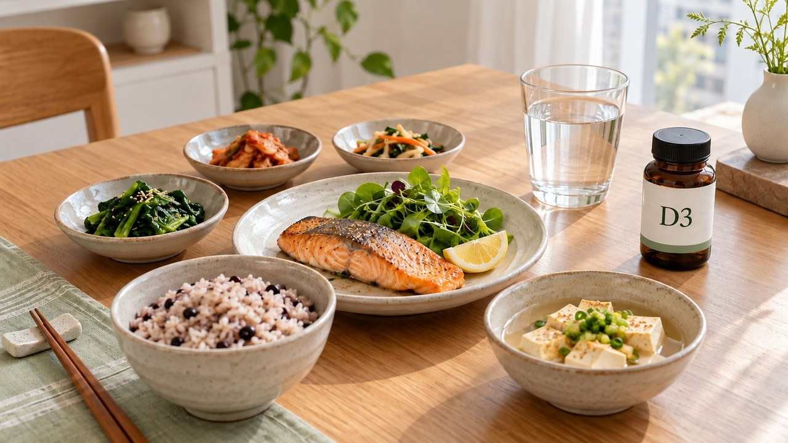

“주사 한 방이면 몇 달 편하겠지?”
비타민D 고용량 전에
수치와 복용법부터 확인하세요

“매일 알약 챙겨 삼키기도 귀찮은데,
석 달에 한 번 주사 맞고 끝내면 안 될까?”
건강검진 수치를 보고 이렇게 생각하셨나요?
바쁜 일상 속에서 한 번에 해결하고픈 마음은
누구나 똑같지만, 단순히 수치만 뛰는 것과
골격을 튼튼히 보존하는 결과는 다를 수 있습니다.
편리하다는 이유만으로 고용량을 고르기 전에
연구의 실제 조건과 내 몸에 맞는 복용법부터
차근차근 구분해 둘 필요가 있습니다.
| 간편한 주사도 연구 조건을 따져보세요

고령층을 대상으로 진행된 일부 연구에서는
많은 양을 간헐적으로 투여했을 때
넘어짐이나 골절이 늘어나는 결과가 관찰되었습니다.
75세 이상 어르신에게 연간 300,000 IU를 주사하거나
연간 500,000 IU를 한 번에 복용한 연구 등이며,
위해가 나타난 정확한 체내 원인은 불명확합니다.
따라서 모든 주사에 똑같은 위험을 적용할 수는 없지만,
학회는 폐경 후 여성과 50세가 넘은 남성의 뼈 건강 관리에서
하루 800~1,000 IU 경구 복용을 권고합니다.
| 햇빛과 검사 수치를 함께 확인하세요

“난 낮마다 산책하는데 왜 부족할까?”
거주 위도와 외출하는 시간대, 걸친 옷의 형태에 따라
몸이 빚어내는 합성량이 달라지기 때문입니다.
혈청 검사 수치는 20 ng/mL 미만이면 결핍이며,
일반 성인의 관리선은 20 ng/mL 이상 구간입니다.
골흡수억제제를 쓰는 경우엔 30 ng/mL가 도움이 될 수 있고,
50 ng/mL를 넘기면 추가 이득이 없답니다.
| 칼마디는 식사 습관부터 맞춰보세요

영양제를 드실 때 피해야 할 대표적인 습관은
아침에 눈뜨자마자 빈속에 삼키는 일입니다.
비타민 D는 기름에 녹는 지용성 성분이기 때문입니다.
지방질이 포함된 식사와 함께 드셔야
몸속에서 흡수를 돕는 데 유리합니다.
복합제에 적힌 섭취 방법에 맞춰
밥을 먹은 뒤 편안한 타이밍에 규칙적으로 드셔보세요.
| 똑똑한 복용을 위한 3가지 체크포인트

첫째, 비타민 D는 식사와 함께 챙기되 제품 안내를 따르세요.
둘째, 다른 제품을 함께 먹는다면 복용 시간을 배분하세요.
셋째, 성인 기준 하루 4,000 IU(100 μg) 상한선을 확인하세요.
종합비타민과 겹치는 함량이 없는지 살피는 것이 좋습니다.
만약 지속적인 메스꺼움, 심한 갈증, 잦은 소변이 느껴진다면
몸속에 과해진 신호일 수 있으니 섭취를 멈추셔야 합니다.

| 탄탄하게 꾸준히 채우는 건강 루틴

단번에 끝내려는 주사 한 방의 유혹 대신,
매일 식사 후 잊지 않고 챙기는 한 알이
찬바람 부는 계절 우리 몸을 지키는 참 든든한 방패입니다.
오늘부터 식후 칼마디 습관, 함께 시작해 볼까요?

여러분은 영양제를 식후에 잘 챙기고 계셨나요?
평소 복용 습관이나 궁금한 점을 댓글로 편하게 남겨주세요 😊

📚 참고 자료
• 대한골대사학회 — 성인 골다공증 및 골절 관리를 위한 비타민 D 입장문 (2022)
• 대한골대사학회 — 간헐적 고용량 비타민 D 투여에 관한 보고서 (2017)
• 미국임상영양학회지 (AJCN) — 식사 지방과 비타민 D 흡수 연구 (2015)
• 미국립보건원 (NIH) 영양보충제국 — 비타민 D 전문가 팩트시트
#혀니의꿀단지 #비타민D #비타민D결핍 #비타민D수치 #칼마디 #비타민D복용시간 #골절관리 #영양제복용시간 #골다공증관리 #에디터혀니